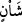

bulunduğumuz bölünmeyen ilâhî gündür. Hakikatte zamanın içidir.
Âyetteki “
/şe’n” işlerden bir işdir. Yaratılmışların O’ndan istediklerini vermesi, bu
işler cümlesindendir. Allah bir takım şahısları yoktan var ederken, bir takımlarını da
yok etmeğe devam eder. Sıhhat, hastalık, tayin, azil, izzet, zenginlik ve fakirlik gibi
hallerin kimini getirir, kimini de götürür. Sonsuz hikmet maslahatlarına dayalı olarak
ilâhî irâdenin gerektirdiği şekilde bu işler icrâ edilir.
Bir hadis-i şerifte: “Bir günahı yarlığaması, bir sıkıntıyı gidermesi, bir toplumu
yükseltip diğerlerini alçatması Allah’ın işlerindendir” buyrulmuştur.[172]
Fudayl oğlu Hüseyin demiştir ki;
/şe’n, mikdarları vakitlere nakl etmektir. İbn
Abbâs (r.a.)’den rivâyet edildiğine göre şöyle demiştir: Allah beyaz inciden iki tarafı
kırmızı yakut kalemi ve yazısı nur olan bir levha yarattı. Ona her gün üçyüz altmış kez
bakar. Yaratır ve rızık verir, diriltir ve öldürür, aziz ve zelil eder, yüceltir ve alçaltır.
Dilediğini yapar. “O her an yaratma hâlindedir” (er-Rahmân, 55/29) âyet-i
kerîmesinin mânâsı işte budur. Şu hadis-i şeriften alınmıştır: “Allah Teâlâ kullarına her
gün üçyüz altmış kez nazar eder. O, ilk defa yaratan (ölümden sonra tekrar hayatı)
geri getirendir. Bu O’nun yarattıklarını sevdiğindendir.”[173] Bu sevginin delili
söylenen şu sözdür; Allah Teâlâ her gün binbir kez diriltir, bin kez de öldürür. Fânî
hayat bâkî hayatı kazanmak için bu denli iyi olursa, ebedî ve bâkî olan hayat ne kadar
değerli olur dersin.
Uyeyne’den nakledildiğine göre demiştir ki; zaman Allah’ın nezdinde iki günden
ibarettir. Bu günlerden biri dünya müddeti kadardır. Allah bu gündeki işi, emir ve
nehyetmek, diriltip öldürmek, verip vermemek, mahrum etmektir. Günün diğeri ise
kıyâmet günüdür. Ondaki işi de cezâlandırmak ve mükâfâtlandırmak, hesaba çekmek,
sevap ve azab vermektir.
Mukâtil demiştir ki; bu âyet-i kerîme yahûdîler hakkında inmiştir. Onlar, Allah
cumartesi hiçbir şey infaz etmez, demişlerdi. Bu âyet-i kerîme onların bu görüşlerini red
etmektedir. O’nun her an yaratma hâlinde olduğuna delildir. Her gün işleri çevirir veya
yeniden yaratır. Bahrü’l-ulum’da da ifâde edildiği gibi.
30. O halde Rabbinizin hangi nimetlerini yalanlayabilirsiniz?
İhsan buyurduğu bunca zikredilen nimetlerine şâhid olduğunuz halde nasıl
yalanlarsınız?
Bahru’l-hakayık’ta denilmiştir ki; bu âyet-i kerîme, Allah Teâlâ’nın her ferdin
kabiliyet ve istidâdına göre her zaman ayrı ayrı tecellîsine işâret etmektedir. O’nun
tecellîlerine sınır yoktur. “Rabbinizin nimetlerinden hangisini yalanlayabilirsiniz?”
âyet-i kerîmesi de sizin isteklerinizin şekli onu var etmesi ve sevdiklerinizin vücûduna